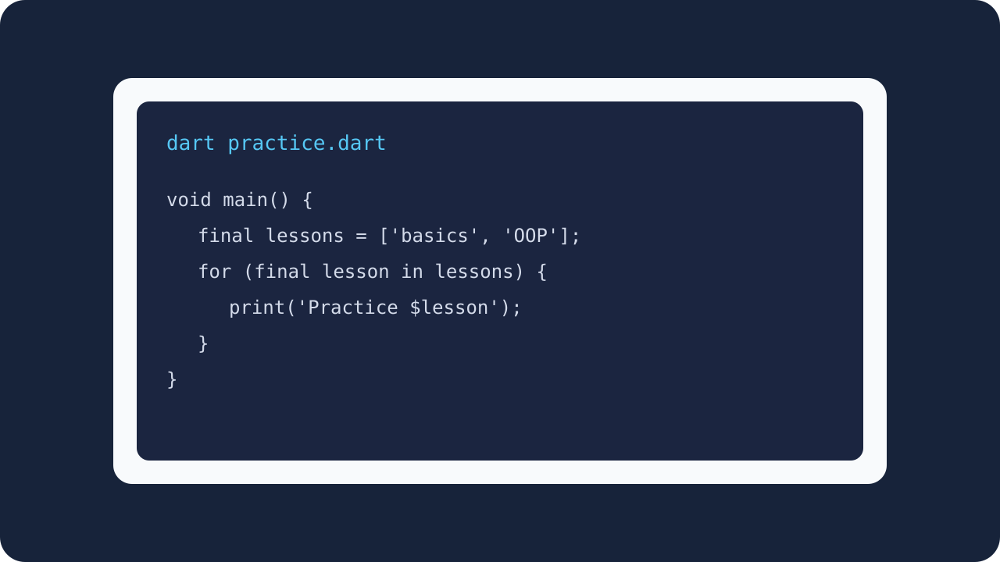

The challenge
Dart concepts are easier to learn through small, inspectable examples.
A structured collection of Dart practice code and learning notes.

Dart concepts are easier to learn through small, inspectable examples.
Created practice code and short lessons while progressing through Dart.
The repository collects basic-to-advanced Dart exercises and notes.
Status reflects the project's published description; it is not a claim of independent production verification.